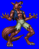
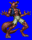
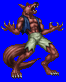
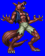

Height: 1-2 meters Weight: 100-200 lbs.
Habitat: Forest Origin: Balkan states
Meaning: Ancient English for "wolf man"
Werewolves are man-wolf hybrids, a class of lycanthrope. The word comes from the ancient Greek "lycos" (wolf) and "anthropos" (man). One cursed in this way assumes the form of a wolf under the glow of the full moon, and reverts to human form at dawn. In the most popular retelling of the myth, silver weaponry is required to kill a werewolf. As the legend evolved, stories of half-man, half-wolf hybrid that is not influenced by the lunar phase appeared. In some stories, those killed by werewolves rise from the dead and become werewolves themselves.